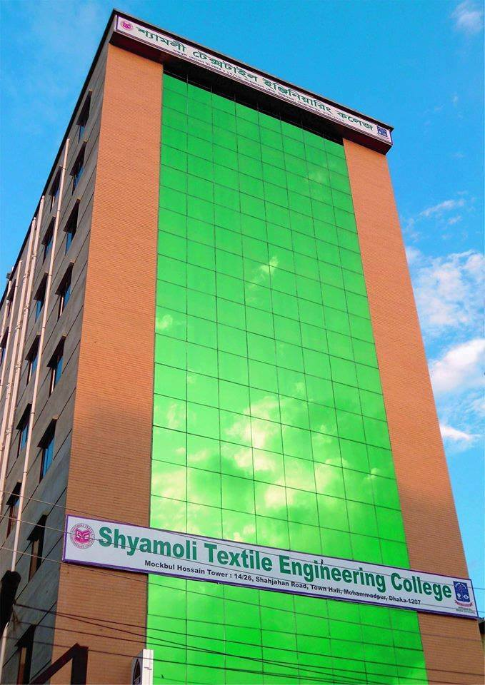

কলেজ পরিচিতি

আমার কলেজ ঢাকার মোহাম্মদপুরের টাউন হলে অবস্থিত । আমার কলেজের নাম হলো “ শ্যামলি আইডিয়াল পলিটেকনিক ইন্সটিটিউট ” । শ্যামলী আইডিয়াল পলিটেকনিক ইনস্টিটিউট ১৯৭৯ সালে এম. এ. সাত্তার প্রতিষ্ঠান করেছিলেন। এম. এ. সাত্তার কিছু শিক্ষার্থী নিয়ে প্রতিষ্ঠানের যাত্রা শুরু করেছিলেন। যা বর্তমানে বাংলাদেশের সবচেয়ে ব্যয়বহুল বেসরকারী পলিটেকনিক ইনস্টিটিউট হিসাবে পরিচিত। যেখানে আজ হাজার হাজার শিক্ষার্থী ডিপ্লোমা কোর্স করছে। বর্তমানে প্রতিষ্ঠানের ৪ টি জেলায় ৪ টি ক্যাম্পাস রয়েছে। তবে সাম্প্রতিক সময়ে লক্ষ্মীপুর ক্যাম্পাসে শিক্ষার্থী সংখ্যা কম থাকায় তা প্রায় অচল অবস্থায় রয়েছে।